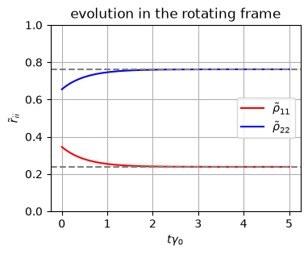
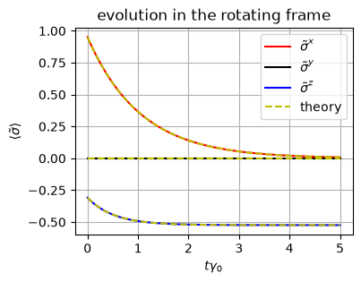
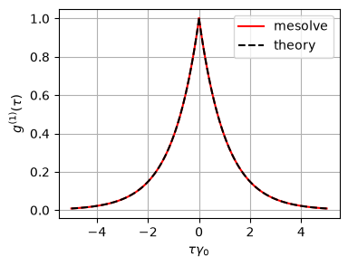
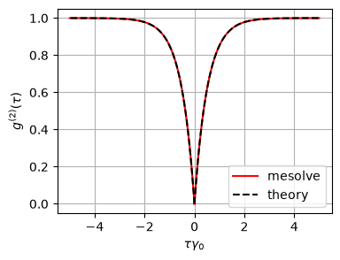

7.6. An example: Single emitter#
7.6.1. Optical master equation for thermal radiation#
Let us consider a hypothetical case where a single two-level emitters with the transition energy in a infrared range. The emitter is placed in a hot photon gas of temperature around \(1000\) k.
The system Hamiltonian is simply \(H_{0} = \frac{\omega_{0}}{2} \sigma^{z}\) and the disippator is
and the other for emission
where \(\Gamma^{\uparrow} = \gamma_{0} \bar{n}(\omega_{0})\) and \(\Gamma^{\downarrow} = \gamma_{0} [\bar{n}(\omega_{0})+1]\).
Combining all terms, we obtain the quantum master equation
This equation of motion is simply an ordinary differential equation of \(2\times2\) matrix, simple enough for analytical calculation.
Writing the equation of motion for each matrix element,
which can be solved easily:
where \(\gamma = \Gamma^{\uparrow}+\Gamma^{\downarrow}\). The steady state is
which is nothing but the Gibs state.
7.6.2. Bloch equations#
There are many ways to solve Eq. (7.25). There is a special method that works only for the two-dimensional Hilbert space. Recalling that the identity matrix \(I\) and the Pauli matrices \(\sigma_{i}\) form a basis set. Expanding the density operator in the basis set,
where \(\vec{\sigma} = (\sigma^{x}, \sigma^{y}, \sigma^{z})\) and \(\vec{r}(t) = (r_{1}(t),r_{2}(t),r_{3}(t))\) is the Bloch vector, which uniquely determine the density operator.[3, 23] Since the density operator is self-adjoint, \(\vec{r}\) is real. In fact, it is easy to show that \(\vec{r} = \langle \vec{\sigma}\rangle = \text{tr}\left[\vec{\sigma}\rho(t)\right]\). Multiply \(\vec{\sigma}\) to Eq. (7.25) and taking trace, we obtain the equation of motion for the Bloch vector is given by
where \(\gamma = \gamma_0 (2\bar{n}+1)\). Equation (7.27) is called the Bloch equation.[3, 24]
By letting the left hand side 0, we can immediately find the steady state.
The probability to find the atom in the excited state is given by
which is just the thermal equilibrium state. Hence, the system is relaxed to the thermal state.
Next, we calculate the relaxation to the thermal state starting from a pure state \(|\psi_0\rangle = \cos \theta |0\rangle + \sin \theta |1\rangle\), which gives the initial density operator
The initial condition for the Bloch equation is
The solution is
which indicates \(\gamma\) is the relaxation rate.
Equation (7.29) that this process involves the dissipative type of decoherence with \(T_1 = 1/\gamma\) and \(T_2 = 2/\gamma\). Thus \(T_2= 2 T_1\) as mentioned in Chapter 3.
7.6.3. Solving a master equation numerically using QuTiP#
As introduced in Chapter 6, QuTiP has a module mesolve() which solve quantum master equations. FOr numerical method, we first need to set up parameters. As discussed in Chapter 7.4, we use dimensionless units. First of all, we always set \(\omega_{0}=1\). Then, temperature is about \(T=0.86\omega_{0}\). We use a typical spontaneous emission rate \(\gamma_{0} = 10^{-8} \omega_{0}\). You can see from the analytical solution (7.29), the state oscillates rapidly and decays slowly. With this these parameter values, we cannot integrate the master equation numerically. We need to use the rotating frame discussed in Chapter 7.5. In the interaction picture, the Hamiltonian is eliminated and the master equation is simply
The following code solve the same master equation as the above and plots the Bloch vectors. The theoretical results are also plotted with dashed lines. Since the numerical results agree with the analytical solution perfectly, the theoretical plots are invisible. We also plot the evolution of Bloch vector in the Bloch sphere. The state is initially on the surface of the Bloch sphere since it is a pure state. Then, the state spirals down to the thermal equilibrium located on the \(z\) axis.
The result shows that \(\tilde{\rho}\) approaches to the thermal state as expected.
import matplotlib.pyplot as plt
import numpy as np
from qutip import *
# Parameters
omega0 = 1.0 # excitation energy
gamma0 = 1.e-08 # spontaneous emission rate
T = 0.86 # tempeature of photon gas
nbar = 1/(np.exp(omega0/T)-1) # Planck distribution
theta = 2*np.pi/10 # initial condition
# decay rates normalized by gamma0
gamma1 = nbar # coefficient to absorption
gamma2 = nbar+1 # coefficient to emission
gamma = gamma1+gamma2
# empty Hamiltonian (in the rotating frame)
H = 0*qeye(2)
# Jump operators
c_ops = [np.sqrt(gamma1) * sigmap(),np.sqrt(gamma2) * sigmam()]
# Initial state: start in the ground state |g>
psi0 = basis(2,0)*np.sin(theta) + basis(2,1)*np.cos(theta)
# evaluation time
times = np.linspace(0, 5, 100)
# observables to compute
observables = [sigmax(),sigmay(),sigmaz()]
# solve the Lindblad Equation
result = mesolve(H, psi0, times, c_ops, e_ops=[])
rho = result.states
#--Gibbs
q = [np.exp(-omega0/(2*T)),np.exp(omega0/(2*T))]
Z = sum(q)
q = q/Z
p1=[]
p2=[]
for k in range(times.size):
x=rho[k]
p1.append(x[0,0].real)
p2.append(x[1,1].real)
# 4. Plotting the Time Evolution
plt.figure(figsize=(4, 3))
plt.plot(times,p1,label=r"$\tilde{\rho}_{11}$",color="r")
plt.plot(times,p2,label=r"$\tilde{\rho}_{22}$",color="b")
plt.axhline(y=q[0],ls='--',color="grey")
plt.axhline(y=q[1],ls='--',color="grey")
plt.title("evolution in the rotating frame")
plt.xlabel(r"$t \gamma_{0}$")
plt.ylabel(r"$\tilde{r}_{ii}$")
plt.ylim([0,1])
plt.legend(loc=5)
plt.grid(True)
plt.show()

7.6.4. Expectation values#
It the rotating frame, the oscillation is frozen at \(t=0\). Thus \(\langle\tilde{\sigma}^{x}\rangle = e^{-\gamma t/2} \sin(2\theta)\) and \(\langle \tilde{\sigma}^{y} \rangle = 0\). Since \(\sigma^{z}\) commutes with \(U\), \(\langle\tilde{\sigma}^{z}\rangle = \langle\sigma^{z}\rangle\).
observables = [sigmax(),sigmay(),sigmaz()]
# solve the Lindblad Equation
result = mesolve(H, psi0, times, c_ops, e_ops=observables)
sx = result.expect[0]
sy = result.expect[1]
sz = result.expect[2]
gamma = 2*nbar+1
sz_ss = -1/gamma
sx_th = np.exp(-gamma/2*times)*np.sin(2*theta)
sy_th = 0*times
sz_th = sz_ss - np.exp(-gamma*times)*(np.cos(2*theta)+sz_ss)
# 4. Plotting the Time Evolution
plt.figure(figsize=(4, 3))
plt.plot(times,sx,label=r"$\tilde{\sigma}^{x}$",color="r")
plt.plot(times,sy,label=r"$\tilde{\sigma}^{y}$",color="k")
plt.plot(times,sz,label=r"$\tilde{\sigma}^{z}$",color="b")
plt.plot(times,sx_th,label=r"theory",color="y",ls='--')
plt.plot(times,sy_th,color="y",ls='--')
plt.plot(times,sz_th,color="y",ls='--')
plt.title("evolution in the rotating frame")
plt.xlabel(r"$t \gamma_{0}$")
plt.ylabel(r"$\langle\tilde{\sigma}\rangle$")
plt.legend(loc=1)
plt.grid(True)
plt.show()

7.6.5. Coherence functions#
The coherence functions measures the spatio-temporal correlation of radiation fields. (See Chapter 3.11 and Chapter 3.12.) To compute them, we need the creation and annihilation operators. The open quantum approach does not solve the evolution of the radiation field. Then, how do we calculate them? As introduced in Chapter 5.2, the radiation field generated by the emitters can be expressed with the operators of the emitters. Using Eq. (7.13), the coherence functions for a single emitter which is placed at the origin of coordinates are given by
which can be expressed in a closed form:
where \(\mathcal{L} = \mathcal{D}^{\uparrow} + \mathcal{D}^{\downarrow}\). The conditional time evolution \(e^{\mathcal{L} \tau} |e\rangle\langle g|\) can be solved by setting \(\rho_{eg}(0)=1\) in the analytical solution (7.26).
Since \(\frac{\gamma}{\omega_{0}} \sim 10^{-8}\), \(g^{(1)}(\tau)\) oscillates far faster than the relaxation. It is not possible to see it in actual experiment. Experimentalists use various methods to remove the rapid oscillations and find only decay signal. Hence, we can remove \(e^{-i \omega_{0} \tau}\) from \(g^{(1)}(\tau)\). Later we solve the master equation using a rotating frame (see Chapter 7.5), which automatically remove the rapid oscillation.
rho_ss = steadystate(H,c_ops)
# intensity
I = expect(sigmap()*sigmam(),rho_ss)
rho0 = rho_ss*sigmap()
result = mesolve(H,rho0,times,c_ops,e_ops=sigmam())
g1 = result.expect[0]/I
g1_th = np.exp(-0.5*gamma*times)
plt.figure(figsize=(4,3))
plt.plot( times, g1.real, c='r',label="mesolve")
plt.plot(-times, g1.real, c='r')
plt.plot( times, g1_th, c='k',ls='--',label="theory")
plt.plot(-times, g1_th, c='k',ls='--')
plt.xlabel(r'$\tau\gamma_{0}$')
plt.ylabel(r'$g^{(1)}(\tau)$')
plt.legend(loc=1)
plt.grid(True)
plt.show()

7.6.6. Second-order coherence function#
Using Eqs. (5.2), \(e^{\mathcal{L}t} (\sigma^{-}\rho_{ss}\sigma^{+}) = \langle e|\rho| e\rangle e^{\mathcal{L}t}(|g\rangle\langle g|)\) , we find an explicit expression of the correlation function
where \(\rho(\tau;g)\) is a state at \(t=\tau\) starting from the ground state at \(t=0\) and \(p_{e}(\tau;g)\) is a conditional probability that the system is in the ground state at \(t=0\) and in the excited state at \(t=\tau\). \(p_{s}^{ss}\) is the probability of the steady state being in \(|e\rangle\) which we already know from (7.28). Noting that \(\lim_{\tau \rightarrow \infty} p_{e}(\tau;g) = p_{e}^{ss}\), we find \(\lim_{\tau \rightarrow \infty} g^{(2)}(\tau) = 1\). On the other hand, \(\lim_{\tau \rightarrow 0} p_{e}(\tau;g) = 0\) since \(|e\rangle\) and \(|g\rangle\) are orthogonal. Thus we have \(g^{(2)}(0) = 0\).
From the final expression of Eq. (7.33), only we need is \(p_{e}(\tau;g)\) which can be obtained by solving the master equation. Using the general solution (7.29) with initial condition \(\theta=0\), we find \(p_{e}(\tau;g) = \frac{1}{2}\left(1-e^{-\gamma \tau}\right)\left(1+\langle\sigma_z^{ss}\right)\) and \(p_{e}^{ss} = \frac{1}{2}\left(1+\langle\sigma_z^{ss}\right)\), from which we obtain an explicit expression of the second-order coherence:
which shows perfect antibunching.
The following code calculates it numerically using mesolver in QuTip, which agrees with the analytical result.
rho0 = sigmam()*rho_ss*sigmap()
result = mesolve(H,rho0,times,c_ops,e_ops=sigmap()*sigmam())
g2 = result.expect[0]/I**2
g2_th = 1 - np.exp(-gamma*times)
plt.figure(figsize=(4,3))
plt.plot( times, g2.real, c='r',label="mesolve")
plt.plot(-times, g2.real, c='r')
plt.plot( times, g2_th, c='k', ls='--',label="theory")
plt.plot(-times, g2_th, c='k', ls='--')
plt.xlabel(r'$\tau\gamma_{0}$')
plt.ylabel(r'$g^{(2)}(\tau)$')
plt.legend(loc=4)
plt.grid(True)
plt.show()
